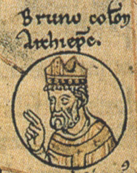

中世紀巡行王權的權力運作、制度體系與社會實態：以奧圖一世九五五年巡行與戰事為核心之歷史學考察

中世紀巡行王權的定義、緣起與傳統
中世紀早期的歐洲政治秩序在很大程度上表現為一種「無行政國家」或「前現代國家」的具體型態。在缺乏常設官僚機構、固定首都、成文憲政體制以及連續性文書流轉系統的歷史脈絡下，王權的維持與展現高度依賴於君主的物理性移動，這套統治模式在歷史學界被稱為「巡行王權」（德語：Reisekönigtum；英語：Itinerant Kingship）。巡行王權的核心機制在於，君主並非在一個固定的地理中心發號施令，而是率領其龐大的宮廷官員、衛兵、神職人員與僕役，在國境內不同的皇家莊園（Königshof）、行宮（Kaiserpfalz）、主教轄區及修道院之間進行週期性或持續性的巡迴移動，並在移動中實行行政、司法、軍事與宗教儀式等統治功能。
從歷史緣起考察，巡行王權的發軔可追溯至西羅馬帝國崩潰後興起的日耳曼繼承王國。墨洛溫王朝與加洛林王朝時期，法蘭克君主為了解決其疆域擴張後地方勢力割據的問題，開始頻繁巡行於法蘭克心臟地帶。加洛林王朝時期，雖然查理曼曾將亞琛（Aachen）建設為帝國的主要居所並建造了規模宏大的宮廷建築群，但這並未終結巡行統治的實踐。查理曼的統治依舊高度仰賴其在萊茵河與摩澤爾河流域的頻繁移動。隨着東法蘭克王國（即後來的神聖羅馬帝國）在十世紀的建立，薩克森奧圖王朝（Ottonians）與後來的薩利安王朝（Salians）將巡行王權推向了制度化的巔峰。
在建築與空間結構上，巡行王權的物質載體——行宮（Kaiserpfalz）展現了高度的儀式性與象徵意義。法蘭克與奧圖王朝的行宮與北歐斯堪地那維亞地區的精英住宅（如丹麥的蒂瑟 Tissø）在結構上存在顯著的平行關係，通常包含一座用於集會的宏偉大堂（Aula）與一座宮廷教堂（Capella），建物表面塗有白色的石灰，以彰顯其神聖與威嚴。行宮的設計展現了世俗權力、宗教儀式與經濟支配三位一體的特徵。以查理曼在亞琛建造的行宮為例，其宮廷教堂（Capella Palatina）採用八角形設計，其靈感主要源自拉文納的聖維塔教堂（San Vitale），同時在風格上亦受羅馬萬神殿等古典建築的間接影響，旨在透過幾何美學與抽象空間構成，重現羅馬帝國的榮光。而相鄰的王室大堂（Aula Regia）則模仿羅馬巴西利卡，但在實際功能上亦兼具日耳曼式的「蜜酒大堂」（Mead-hall）特徵，作為君臣飲宴與彰顯個人紐帶的社交空間。
| 空間類型 | 建築特徵與歷史藍本 | 核心統治與儀式功能 |
| 王室大堂 (Aula Regia) | 模仿羅馬巴西利卡（如特里爾巴西利卡）；長約 47.25 公尺、寬約 20.76 公尺（以亞琢為例）；融入日耳曼式大堂風格。 | 君臣飲宴、召開帝國大會（Hoftag）、進行司法審判、接待外國使節與宣示政治盟約。 |
| 宮廷教堂 (Capella) | 採用幾何化與抽象立體構造；八角形圓頂；以拉文納聖維塔教堂為藍本，內部裝飾羅馬與拉文納運來的古蹟石柱。 | 宗教儀式中心；存放帝國聖物（如聖槍）；由宮廷神職人員（Capellani）運作，作為文書產出與政治宣傳的樞紐。 |
| 皇家莊園 (Villa/Königshof) | 分散於帝國各處的農業生產基地；附帶防衛工事與倉庫；與行宮（Palatium）之間界線在文獻中具有流動性。 | 提供朝廷巡行時的物質供給（Servitium Regis）；代管地方王室地產，防止其被世俗貴族侵佔。 |
巡行王權的特別之處、政治意義與統治功能

巡行王權並非雜亂無章的盲目移動，而是一套具有高度儀式性、空間規律與社會政治意涵的權力運作體系。其獨特之處與統治功能主要表現在以下三個維度：
協商式統治與個人化政治紐帶

中世紀早期的德意志並非一個制度化的集權國家，君主的統治高度依賴與世俗貴族及教會首長建立的個人盟約與「友情關係」（Amicitia）。巡行過程中所召開的帝國大會（Hoftag），提供了君主與地方精英面對面協商、調解糾紛、分配采邑與確認效忠誓言的平台。這種「協商式統治」（Konsensuale Herrschaft）意味著國王並非專制裁決者，而是地方利益的最高仲裁者與平衡者。君主的實體臨在成為司法正義的象徵，若君主長期不造訪某一地區，地方貴族便會因缺乏中央仲裁而陷入私鬥，進而侵蝕王室的土地產權與政治權威。
動態的禮儀展演與視覺化王權
在讀寫率極低的十世紀，權力的合法性無法僅靠文書詔令來維持，而必須透過高頻率的面對面溝通與宏大的禮儀展演。國王在重要教會節日（如復活節、五旬節、聖誕節）進入重要城市、主教座堂或修道院時，會舉行隆重的「國王入城式」（Adventus Regis）。在這些場合中，國王會在彌撒中舉行象徵性的戴冠巡行，向臣民展示神聖的王權標誌（如聖槍、皇冠等）。這種動態的視覺展演將王權的「超自然神聖性」與「世俗支配權」緊密結合，使臣民得以親眼瞻仰並確認王權的合法性。
帝國教會體制與 monastic secularization 的張力

巡行王權與奧圖王朝特有的「帝國教會體制」（Reichskirchensystem）互為表裡。為了解決世俗公爵頻繁叛亂的問題，奧圖一世及其繼任者大力扶持主教與皇家修道院，賦予他們世俗領地、市場權、鑄幣權與伯爵管轄權。作為回報，這些享有特權的教會機構必須向君主承擔沉重的「國王役務」（Servitium Regis），這主要包括在經濟上為巡行的國王及其朝廷提供食宿補給（Gistum/Hospitality），以及在軍事上派遣武裝扈從（Milites）隨君主出征。
然而，這種體制在宗教與世俗層面引發了深刻的內在張力。修道院的成立本基於脫離俗世、固守清貧與專事祈禱的隱修理想，但為了履行繁重的「國王役務」，修道院必須持有遠超自身生存所需的龐大地產，並深度介入世俗經濟與政治運作。這導致了修道院長的「世俗化」（Monastic Secularization），修道院長不再僅是修僧的靈性導師，而成為凌駕於僧團之上的「帝國諸侯」（Reichsfürst），在修道院與王權之間扮演政治代理人的角色。
在此脈絡下，女性修道院（Frauenstifte，如昆德林堡 Quedlinburg、甘德斯海姆 Gandersheim、赫爾福德 Herford）在薩克森心臟地帶發揮了極其關鍵的政治與物流支撐作用。這些機構多由王室女性成員（如奧圖一世的母親馬蒂爾達、女兒馬蒂爾達、姪女格爾伯加二世）擔任女院長。她們在提供宮廷接待與家族追思（Memoria）的同時，更實質控制著帝國關鍵的交通要道與河流渡口，在國王缺席時維持地方的王權存在與社會秩序。
| 女子修道院機構 | 核心王室領導者 | 在巡行王權與地方治理中的具體角色 |
| 昆德林堡修道院 (Quedlinburg) | 皇太后馬蒂爾達 (Matilda of Ringelheim)、 首任女院長馬蒂爾達 (Matilda, Abbess of Quedlinburg) | 作為王室追思中心與財產繼承的核心節點；多次作為帝國大會的舉辦地；在邊疆開拓中發揮象徵性王權輻射作用。 |
| 甘德斯海姆修道院 (Gandersheim) | 女院長格爾伯加二世 (Gerberga II，奧圖一世之姪女) | 位於薩克森核心區；作為文化產出中心與宮廷寫作基地（如 Hrotsvit 的創作）；控制當地陸路交通要道與經濟稅收。 |
| 赫爾福德修道院 (Herford) | 皇太后馬蒂爾達在此接受教育 | 扮演薩克森西部邊界與威斯特法倫（Westphalia）地區的王權政治代理人；維護地方司法與市場秩序。 |
奧圖一世九五五年巡行軌跡：歷史重建與戰略轉折

公元 955 年是奧圖一世統治生涯的關鍵轉折點。在這一年的春夏秋三季，奧圖一世面臨著德意志內部殘餘叛亂勢力、南方馬扎爾人（匈牙利人）的大規模入侵，以及北方東部邊境斯拉夫阿博德利特人（Obotrites/Wends）的邊境騷擾。
在 955 年之前，奧圖一世深陷於其子施瓦本公爵留多夫（Liudolf）與女婿洛林公爵康拉德（Conrad the Red）長達數年的內戰危機中，王權幾乎陷入癱瘓。然而，954年，在馬扎爾人入侵的外部壓力下，叛亂勢力失去了貴族與公眾輿論的支持，留多夫與康拉德相繼向國王臣服歸順。955年夏，馬扎爾人於7月1日越過恩斯河（Enns，巴伐利亞傳統邊界）大舉入侵。由於內戰已於前一年平息，奧圖一世得以迅速動員整個帝國的軍事資源，展開一場南北跨度達數百公里的動態巡行與防禦戰役。
奧圖一世於 955 年橫跨德意志南北的軍事行軍與巡行軌跡，其精確的日程與戰略運作可梳理如下：
[955年 春季 - 7月] 德意志中部與南部邊界
│ (內戰平息，重整軍備；馬扎爾人越境包圍奧格斯堡)
▼
[955年 8月8日 - 9日] 奧格斯堡防線
│ (主教烏爾里希率軍堅守年久失修的城防工事，阻滞敵軍)
▼
[955年 8月10日] 萊希菲爾德平原
│ (萊希菲爾德戰役：八個重裝裝甲騎兵軍團大敗馬扎爾人)
▼
[955年 8月中旬 - 9月] 往北急行軍 (跨越500-600公里)
│ (迅速北上薩克森，平定斯拉夫阿博德利特人入侵)
▼
[955年 10月16日] 雷克尼茨河畔 (Raxa River)
│ (雷克尼茨戰役：在拉尼人協助下秘密架設三座橋樑過河，徹底擊潰斯拉夫叛軍)
▼
[955年 冬季 - 聖誕節] 薩克森核心地帶 (梅爾塞堡/馬格德堡)
(舉辦凱旋慶典；分封諸侯；履行諾言筹建梅爾塞堡教區；馬格德堡教區則屬於更長期的東方基督化規劃）
在 8 月 10 日的萊希菲爾德戰役中，奧圖一世親率手持「聖槍」的八個軍團（包含來自施瓦本、法蘭克尼亞、巴伐利亞與波希米亞的重裝騎兵）發動衝鋒。儘管馬扎爾人利用其高機動性的輕騎兵繞襲帝國軍隊後方的波希米亞軍團與輜重車隊，但康拉德率領的法蘭克騎士及時進行了反衝擊，成功挽救了戰局，康拉德本人則不幸在戰役尾聲陣亡。
在徹底消除南方馬扎爾人的威脅後，奧圖一世並未休整，而是展現了令人震驚的空間跨越能力。由於北方的斯拉夫阿博德利特人在秋季大舉入侵薩克森、屠殺成年男子並奴役婦孺，奧圖一世迅速率領主力部隊北上。10 月 16 日，在雷克尼茨戰役中，德意志軍隊行進至雷克尼茨河畔，面對敵軍在主要渡口的頑強防禦。此時，同盟的斯拉夫拉尼（Rani）部落向奧圖一世指明了一處可行的渡口，並協助帝國軍隊在敵軍主力視野之外秘密搭建了三座臨時木橋，使德意志裝甲騎兵得以渡河包抄敵軍，徹底擊潰了斯拉夫反抗勢力。隨後，奧圖一世於年底返回薩克森的核心行宮，舉辦盛大的聖誕與凱旋慶典，並開始履行其在萊希菲爾德戰役前向聖羅倫斯發下的誓言，着手筹建梅爾塞堡（Merseburg）教區（專屬於聖羅倫斯誓願）以及更長期規劃中的馬格德堡（Magdeburg）總教區（與聖莫里斯〔Saint Maurice〕崇拜相關）。
巡行紀錄對中世紀經濟、物流與交通的側面實證
奧圖一世在 955 年橫跨南北的傳奇行軍與政治動員，不僅僅是軍事史上的重大事件，其留下的歷史紀錄更為我們重建中世紀德意志的交通基礎設施、物資動員體系以及技術知識水平提供了極其珍貴的「側面證據」。
交通網絡與行軍速度的物理限制
歷史分析表明，中世紀巡行王權的移動速度與空間跨度，受到當時道路、馬匹與車輛物理極限的嚴格制約。以下整理了當時交通網絡與移動效率的關鍵量化指標：
| 交通與移動類型 | 日均速度 / 行程指標 | 歷史文獻佐證與空間分布規律 |
| 宮廷與軍隊輜重 （馬車與步兵） | 15 至 19 英里（約 24 至 31 公里） | 皇家莊園、驛站與行宮在主要交通線上的空間分布基準（即每隔 25 公里設有一處補給點）。 |
| 單一郵政騎手 （乾燥陸路） | 75 英里（約 120 公里） | 用於傳遞緊急軍事情報、叛亂預警與外交文書；如 955 年巴伐利亞敵情迅速北傳。 |
| 君主/精銳騎兵 極速移動 | 41 英里（約 66 公里） | 以 1146 年康拉德三世自法蘭克福至韋恩海姆的行軍為例；955 年奧圖一世自南往北的急行軍亦達此等速度。 |
這種物理限制側面證明，中世紀的交通體系高度依賴羅馬帝國時期遺留的路網，特別是那些連接重要主教座堂與城鎮、由地方政權維護的骨幹道路。奧圖一世的萬人軍隊能夠在不到兩個月的時間內，從多瑙河流域橫跨約 500 至 600 公里抵達波羅的海沿岸的雷克尼茨河，證明了舊羅馬陸路與沿途河流渡口在中世紀早期依舊保持著良好的通行狀態與維護水平。
幾何、測量學與野戰架橋技術的實踐
在雷克尼茨戰役中，帝國軍隊面臨河流阻隔、敵軍扼守渡口的困境，最終在烏克蘭尼人協助下，於特定渡口成功搭建橋樑並實施奇襲。這項軍事工程的成功，側面證明了當時薩克森與德意志社會具備相當水準的工程技術。在當時的修道院與大教堂學校中，精英階層接受了包含幾何學（Geometry）與算術（Arithmetic）在內的「四藝」（Quadrivium）教育。這些源自古晚期和加洛林時代的實用技術知識（如維吉提烏斯《論軍事》中的軍事工程原理，以及《土地測量彙編》〔Corpus Agrimensorum〕中的幾何測量技術）被廣泛應用於野戰工程、橋樑構築、營地測量以及木造、石造防禦工事的興建上，為君主的跨空間軍事投射提供了不可或缺的技術與知識產出。
農業剩餘與高度組織化的實物汲取

巡行朝廷本身是一個巨大的「消費黑洞」。歷史文獻顯示，中世紀巡行朝廷的規模通常在 300 至 1,000 人之間，在戰時集結與外國使節造訪時，人數更呈幾何級數增長。如此龐大的非生產人口在交通線上的移動，構成極大的物資消耗與壓力。
為了量化這種物資消耗，我們可以透過 968 年沃姆斯（Worms）主教座堂的一份實物供給紀錄（Tafelgüter/皇室餐桌莊園）進行深入考察（注：以下數據可能反映的是年度或季節性供給義務總量，而非單日消耗）：
| 物資類別 | 每日朝廷消耗量 | 農業與物流實態之側面解讀 |
|---|---|---|
| 生鮮肉類 | 1,000 隻豬與羊、8 頭公牛 | 側面證實地方莊園具備發達的畜牧業規模、草料儲備，以及極高的屠宰、儲存與冷鏈技術之替代方案。 |
| 主食 | 1,000 蒲式耳穀物 | 反映了當地農業具備高度的剩餘糧食生產力，並有成熟的磨坊加工與麵包烘焙體系。 |
| 飲品 | 10 桶葡萄酒 | 證實了跨區域的液體大宗物資物流網存在；葡萄酒等物資主要透過水路（河流）聯運。 |
| 副食品 | 大量的雞、魚、蛋與蔬菜 | 揭示了行宮周邊存在發達的本地小農經濟與市場供應網絡，能即時滿足宮廷的多樣化消費需求。 |
這套龐大的實物供給體系，必須依賴莊園農民承擔的「轉運勞役」（Scara）與提供「郵遞馬匹」（Parafridi/Parafretus）來維持。農民與依附人口不僅要生產物資，還必須用馬車或馱馬將成噸的穀物、成桶的葡萄酒跨越數十公里運送至國王即將抵達的行宮。這種將「分散的農業剩餘」轉化為「集中的宮廷消費」之物流網絡，證明了中世紀早期的德意志農村絕非全然自給自足、孤立閉塞的原始狀態，而是存在著一套由王室地產體系與教會網絡支撐、組織極其嚴密且富有彈性的實物調配與運輸機制。
結論
中世紀的巡行王權絕非國家建制「不發達」或「落後」的權宜之計，而是在特定歷史、地理與經濟技術限制下，最為理性且高效的動態權力整合模式。它透過君主與宮廷在空間中的物理移動，將無形的王權具象化為面對面的司法調解、神聖戴冠儀式與政治盟約協商，在「無首都」的狀態下成功維持了龐大帝國的政治凝聚力。
奧圖一世在公元 955 年橫跨南北的輝煌巡行與戰役，則從側面揭示了這一統治模式背後的物質與制度支撐體系。萊希菲爾德與雷克尼茨兩大戰役的勝利，不僅奠定了奧圖一世於 962 年加冕為神聖羅馬帝國皇帝的合法性，更向後世證明：十世紀的歐洲社會具備驚人的跨區域情報傳遞速度、殘存但依舊發揮功能的羅馬及地方路網、系統化的實用野戰工程與幾何測量技術，以及在「帝國教會體制」支撐下、以「國王役務」和「餐桌財產」為核心的高彈性物資汲取與物流動員能力。巡行王權正是以此為物質基石，在流動的疆域中編織出一張維持德意志政治秩序達數百年之久的權力之網。
引用的著作
- Who pays for lodging in a medieval royal court? : r/AskHistorians - Reddit_pays_for_lodging_in_a_medieval_royal_court/
- 1 Hegemony, rebellion and history: Flodoard's Historia Remensis ecclesiae in Ottonian perspective
- (PDF) "The Saxon expeditions against the Wends and the foundation of Magdeburg during Otto I's reign", The Romanian Journal for Baltic and Nordic Studies, 11/2 (2019), pp. 7-34 - ResearchGate_The_Saxon_expeditions_against_the_Wends_and_the_foundation_of_Magdeburg_during_Otto_I's_reign_The_Romanian_Journal_for_Baltic_and_Nordic_Studies_112_2019_pp_7-34
- THE PLACE OF AN ITINERANT COURT IN CHARLEMAGNE'S GOVERNMENT Rosamond McKitterick In 1965, Adolf Gauert pub - Brill_008.pdf
- ITINERANT KINGSHIP, ROYAL MONASTERIES AND THE SERVITIUM REGIS - Cambridge University Press & Assessment_p45-84_CBO.pdf/itinerant_kingship_royal_monasteries_and_the_servitium_regis.pdf
- “The King in the Saddle”: The Árpád Dynasty and Itinerant Kingship in the Eleventh and Twelfth Centuries - Hungarian Historical Review
- THOR™' FREYJA
- ITINERANT KINGSHIP, ROYAL MONASTERIES AND THE SERVITIUM REGIS (Chapter 2)
- Early Medieval Europe 300-1050: The Birth of Western Society 1408251213, 9781408251218 - DOKUMEN.PUB
- Bernhardt, "Itinerant kingship and royal monasteries in early medieval Germany" (Book Review) - ProQuest
- The Kingdom of the East Franks during the Ottonian dynasty - Museum Boppard_04/
- Carolingian Pfalzen and law - SciSpace
- Charlemagne's Palace Chapel at Aachen and Its Copies - The University of Chicago Press: Journals
- The Carolingians in Central Europe | PDF | Travel | Art - Scribd
- Hagen Keller - Wikipedia_Keller
- “The King in the Saddle”: The Árpád Dynasty and Itinerant Kingship in the Eleventh and Twelfth Centuries*_2022-3_Hudacek.pdf
- Cultural depictions of Otto the Great - Wikipedia_depictions_of_Otto_the_Great
- Lechfeld (955 A. D.) - World History Volume
- Concordat of Worms | Church-State Relations, Papal Authority & Investiture - Britannica
- German Bishops and their Military Retinues in the Medieval Empire
- SERVITIUM REGIS AND MONASTIC PROPERTY (Chapter 3) - Itinerant Kingship and Royal Monasteries in Early Medieval Germany, c.936–1075 - Cambridge University Press & Assessment
- A Companion to the Abbey of Quedlinburg in the Middle Ages 9004305572, 9789004305571 - DOKUMEN.PUB
- "Renowned Queen Mother Mathilda:" Ideals and Realities of Ottonian Queenship in the Vitae Mathildis reginae (Mathilda - Essays in History
- Frands Herschend - Diva-Portal.org
- Otto the Great Facts for Kids_the_Great
- Otto der Große: Mit acht Legionen begründete der Sachse das Reich der Deutschen - WELT
- History of Germany Part VII: Otto the Great and the founding of the Holy Roman Empire.
- Otto I., der Große in | Schülerlexikon - Lernhelfer.de
- Otto I. der Große - Lechrain-Geschichte_MAF_Ottonen_Otto%20I.html
- Otto I | Biography | Research Starters - EBSCO
- German Expansion East of the Elbe in the 10th and 11th Centuries - The Lost Fort
- 1 The Ottonians and Italy* Levi Roach It may seem counterintuitive to have an article on Italy in a special issue of German Hist
- Spurensuche im Merseburger Kaiserdom
- GERMAN KINGSHIP AND ROYAL MONASTERIES: THE_p3-44_CBO.pdf/german-kingship-and-royal-monasteries-the-historical-and-historiographical-context.pdf
- Military Education - Cambridge University Press & Assessment_p102-134_CBO.pdf/military-education.pdf
- Rulers on the Road: Itinerant Rule in the Holy Roman Empire, AD 919–1519 - Carl Müller-Crepon_rule/MNKM_itin_rulers_20250429.pdf
- Medieval Concepts of The Past Ritual | PDF - Scribd
- Otto und das Reich - ZDF goes Schule
- The Staffelsee inventory. Carolingian manorial economy, mobility of peasants, and "pockets of functional continuity" in the transition from antiquity to the Middle Ages - EconStor
- 955 History trail – loop to the Battle of Lechfeld | ride | Komoot
- Timeline of German history - Wikipedia_of_German_history
- Geschichtlicher Hintergrund - Lechfeldschlacht | Die Schlacht auf dem Lechfeld